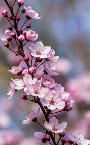

-
Flor de Lavanda
A lavanda é comumente associada à pureza, comprometimento, serenidade e calma. Esses temas estão relacionados às formas como a lavanda é usada. Calma e serenidade apontam para os usos da lavanda para ajudar no sono e aliviar a ansiedade.
R$ 120,00
-
Rosa

A rosa é uma das flores mais populares no mundo. Vem sendo cultivada pelo homem desde a Antiguidade. A primeira rosa cresceu nos jardins asiáticos há 5 000 anos. Na sua forma selvagem, a flor é ainda mais antiga.
R$ 100,00
-
cereja
Uma flor de cerejeira, também conhecida como cerejeira japonesa ou sakura, é uma flor de muitas árvores do gênero Prunus ou Prunus subg. Cerasus. São espécies comuns no leste da Ásia, incluindo China, Coréia e especialmente no Japão
R$ 200,00